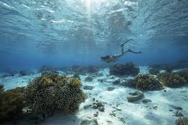
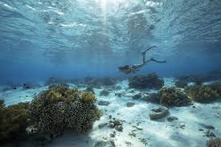

Highlights
- Radhanagar Beach (Havelock Island): Famous for its pristine white sands and turquoise waters, often rated as one of Asia’s best beaches.
- Scuba Diving and Snorkeling (Havelock & Neil Island): Explore vibrant coral reefs and marine life in some of India’s best dive sites.
- Cellular Jail (Port Blair): A historical landmark with light and sound show depicting India’s freedom struggle.
- Ross Island: Explore the ruins of British colonial buildings now reclaimed by nature, offering unique photographic opportunities.
- Baratang Island: Known for limestone caves, mangrove forests, and mud volcanoes for an offbeat adventure.
- Neil Island: Relax at beaches like Laxmanpur, Bharatpur, and Sitapur, each known for calm waters and picturesque sunsets.
- Elephant Beach (Havelock Island): Perfect for water sports like jet skiing, sea walking, and snorkeling with clear waters and coral reefs.


 



Beach fun in Andaman
Day 1: Arrival in Port Blair
- Activities: Check-in and preparation for upcoming activities
- Highlights: Corbyn’s Cove Beach for jet skiing and banana boat rides
- Corbyn’s Cove Beach offers safe water sports to get you started.
Day 2: Port Blair to Havelock Island
- Highlights: Scuba Diving at Havelock Island
- Activities: Morning ferry to Havelock, check in, and scuba diving session (suitable for both beginners and advanced divers)
- Discover vibrant corals and diverse marine life. Evening at leisure to relax on the beach.
Day 3: Water Sports at Elephant Beach
- Highlights: Snorkeling, Sea Walking, Jet Skiing at Elephant Beach
- Activities: Speedboat ride to Elephant Beach, full day of water sports including snorkeling and sea walking
- Elephant Beach is known for clear waters, making it perfect for snorkeling and sea walking. Return to your resort by evening.
Day 4: Havelock to Neil Island for Underwater Adventure
- Highlights: Snorkeling and Glass-Bottom Boat Ride at Bharatpur Beach
- Activities: Morning ferry to Neil Island; snorkeling and glass-bottom boat ride at Bharatpur Beach, perfect for viewing coral reefs
- Neil Island is quieter, ideal for snorkeling and underwater photography. Return to Havelock by evening.
Day 5: Kayaking and Sunset Cruise at Havelock
- Highlights: Kayaking in mangroves, evening sunset cruise
- Activities: Early morning guided mangrove kayaking tour, sunset cruise for a relaxing end to the day
- Experience the serene mangroves and get close to nature. Kayaking is a fantastic way to explore Andaman’s hidden water trails.
Day 6: Departure from Havelock to Port Blair Tapu
- Activities: Morning ferry back to Port Blair
- Transfer to the airport for departure